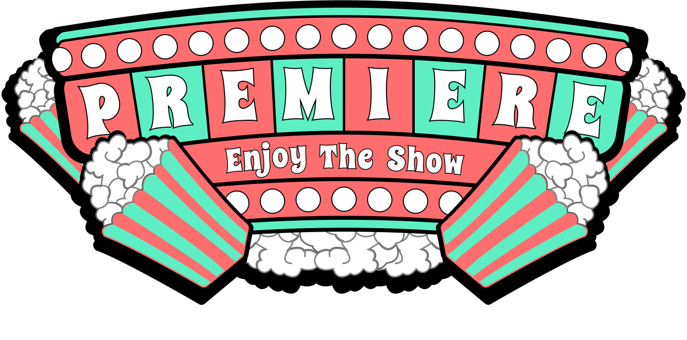
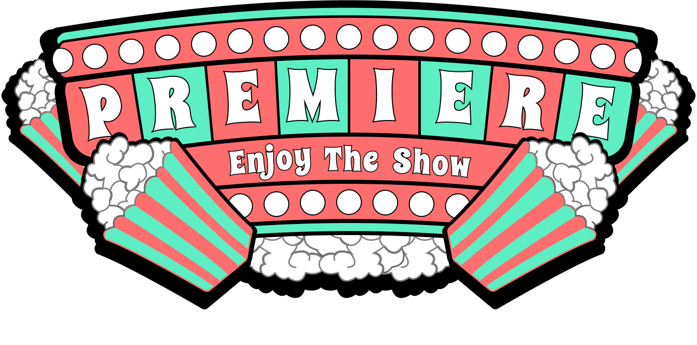

Overview
In my Visual Design II course, the goal of our project was
to create two distinct brand identities using specific principles
of visual design. I created two lockups (the final form of a
logo and all of its combined elements; these elements include
the logotype, icon, and tagline). Once the lockups were
created for both brands, I designed two style guides, which
explain design decisions and properly defines the intention of the brands.
In my Visual Design II course, the goal of our project was
to create two distinct brand identities using specific principles
of visual design. I created two lockups (the final form of a
logo and all of its combined elements; these elements include
the logotype, icon, and tagline). Once the lockups were
created for both brands, I designed two style guides, which
explain design decisions and properly defines the intention of the brands.
- Design two unique brand identities
- Both brands follow visual design principles
- Create style guides for each brand
 

We chose a low-key split complementary color scheme for our lockup. The lockup
consists of two warm colors and a cool color to act as a background.
Low-key variants were chosen so that the warm colors do not come across as too
aggressive.
Low-key colors also achieve a professional and somewhat serious image.
The warm colors, orange and red, give off a striking and dynamic look. The blue is
meant to give off a more boldappearance in order to balance out the warm colors.

A complementary color scheme of high-key colors were chosen for the lockup.
This color combination was chosen in order to convey an image that is both entertaining and
friendly. High-key colors allow the lockup to appear friendly.
Red is the dominant color in the lockup because it is the warm color of the pair
and should be the focus. Green, the calming cool color, is strategically used in a
way to balance out the red so that the lockup does not appear too aggressive.
Black and white are used as accent colors in the lockup.
For our typeface we chose Caesar Dressing, which is meant to be a decorative
typeface. This typeface gives off a bold and dynamic feel due to the thickness of it’s
letters and the diagonal lines seen throughout. Montserrat should be used
for body text. Caesar Dressing should be used only in the lockup and headings.
A decorative typeface by the name of Spicy Rice was chosen to achieve an entertaining and friendly appearance.
The curvy and decorative nature of the typeface ensures that the lockup is entertaining without
sacrificing it’s intention to portray a friendly environment.Montserrat should be used for
the body text. Spicy Rice should only be used for headings and the lockup.
In the lockup for Apollo, the word dynamic is represented
by the shape and appearance of our logo and lockup overall.
Diagonal lines are used extensively throughout the lockup in
order to appear dynamic. Everything from the use of typeface,
the diagonal blue background, and the icon all represent a dynamic feeling.
The lockup for Premiere is abundant with many curved lines
and rounded shapes. Curved lines are used in an attempt to
create a more friendly and inviting design. As you can see,
not only is the typeface curved but each individual shape has
curvature as well. Everything from the popcorn to the lights
is rounded to achieve the intended impression of friendliness.


Conclusion
The lockup for Premiere is abundant with many curved lines
and rounded shapes. Curved lines are used in an attempt to
create a more friendly and inviting design. As you can see,
not only is the typeface curved but each individual shape has
curvature as well. Everything from the popcorn to the lights
is rounded to achieve the intended impression of friendliness.